Amendment #88 (S.O. 1914, 1971)
26 changes: 1 to the First Schedule, 25 to the Second Schedule. 26 applied
What it did to the ministries
- splitMinistry of Education and Youth Services splits into Ministry of Education and Social Welfare (48) and Department of Culture (34) and Department of Science and Technology (6) change 2, 22 · histories: Education and Youth Services, Education and Social Welfare, Culture, Science and Technology
- splitMinistry of Health and Family Planning, and Works Housing & Urban Development splits into Ministry of Health and Family Planning (75) and Ministry of Works and Housing (20) change 7, 8, 19 · histories: Health and Family Planning, and Works Housing & Urban Development, Health and Family Welfare, Housing and Urban Affairs
- splitMinistry of Petroleum and Chemicals and Mines & Metals splits into Ministry of Petroleum and Chemicals (24) and Ministry of Steel and Mines (10) change 14, 15, 16, 17 · histories: Petroleum and Chemicals and Mines & Metals, Petroleum and Chemicals, Steel and Mines
- absorbedMinistry of Steel and Heavy Engineering joins Ministry of Steel and Mines (6 subjects) change 17 · histories: Steel and Heavy Engineering, Steel and Mines
- renamedMinistry of Food, Agriculture, Community Development & Cooperation is renamed Ministry of Agriculture change 6 · histories: Agriculture
- renamedMinistry of Industrial Development and Internal Trade is renamed Ministry of Industrial Development change 10 · histories: Industry
- renamedMinistry of Labour, Employment & Rehabilitation is renamed Ministry of Labour and Rehabilitation change 11 · histories: Labour and Rehabilitation
- renamedMinistry of Law is renamed Ministry of Law and Justice change 12, 13 · histories: Law and Justice
- renamedPlanning Commission is renamed Ministry of Planning change 16, 22 · histories: Planning and Programme Implementation
- renamedDepartment of Communications is renamed Ministry of Communications change 21 · histories: Communications
- renamedMinistry of Supply is renamed Department of Supply change 2, 17 · histories: Supply
- grewMinistry of Law and Justice grows from 32 to 39 subjects change 12, 13 · histories: Law and Justice
The order, page by page
Page 1 of 12
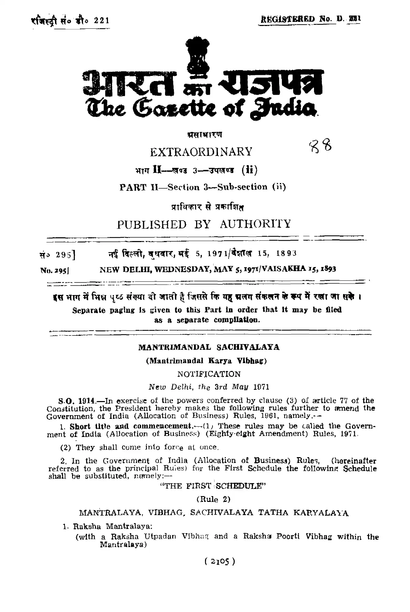
1Schedule 1
- THE FIRST SCHEDULE (Rule 2) MANTRALAYA, VIBHAG, SACHIVALAYA TATHA KARYALAYA
- 1. Raksha Mantralaya
- -. Raksha Utpadan Vibhag
- -. Raksha Poorti Vibhar within the Marıtralaya) THE GAZETIE OF INDIA EXTRAORDINARY {PART H
- 2. Shiksha aur Samaj Kalyan Mantralaya: (1) Shiksha Vibhag.
- ii. Samaj Kalyan Vibhag.
and 46 more
- 3. Videsh Mantralaya.
- 4. Vitta Mantralaya:
- i. Banking Vibhag.
- ii. Arthik Karya Vibhag.
- iii. Vyaya Vibhag.
- iv. , Rajaswa Aur Bima Vibhag
- 5. Krishi Mantralaya:
- i. Krishi Vibhag.
- ii. Khadya Vibhag.
- iii. Samudayik Vikas Vibhag.
- iv. Sahkarita Vibhag.
- 6. Videsh Vyapar Mantralaya.
- 7. Swasthya Aur Parivar Niyojan Mantralaya. (1) Swasthya Vibhag. (1) Parivar Nlyojan Vlbhag.
- 8. Grih Mantralaya:
- 9. Audyogik Vikas Mantralaya: (1) Audyogik Vikas Vibhag.
- ii. Aantrik Vyapar Vibhag.
- 10. Soochana Aur Prasaran Mantralaya.
- 11. Sinchal Aur Vidyut Mantralaya.
- 12. Shram Aur Punarvas Mantralaya: (1) Shram Aur Rozgar Vibhag.
- ii. Punarvas Vibhag.
- 13. Vidhi Aur Nyaya Mantralaya:
- i. Vidhi Karya Vibhag.
- ii. Vidhaye Vibhag.
- iii. Nyaya Vibhag.
- 14. Petroleum Aur Rasayan Mantralaya.
- i. Petroleum Vibhag.
- ii. Rasayan Vibhag.
- 15. Yojana Mantralaya.
- 16. Rall Mantralaya (Railway Board)
- 17. Nauwahan Aur Parivahan Mantralaya
- 18. Ispat Aur Khan Mantralaya: (1) Ispat Vibhag. (11) Khan Vibhag.
- 19. Paryatan Aur Nagar Vimanan Mantralaya.
- 20. Nirman Aur Awas Mantralaya.
- 21. Parmanu Urja Vibhag.
- 22. Sanchar Mantralaya. Sec. 3(fi)]
- 23. Company Karya Vibhag.
- 24. Sanskriti Vibhag.
- 25. Sansadiya Karya Vibhag.
- 26. Vigyan Aur Pradyogiki Vibhag.
- 27. Poorti Vibhag.
- 28. Mantrimandal Sachivalaya:
- i. Mantrimandal Karya Vibhag.
- ii. Electronics Vibhag.
- iii. Karmik Vibhag. (Iv) Sankhiki Vibhag.
- 29. Rashtrapati Sachivalaya.
- 30. Pradhan Mantri Sachivalaya.
applied at schedule 1 in the Rules after #88
read page break
Page 2 of 12
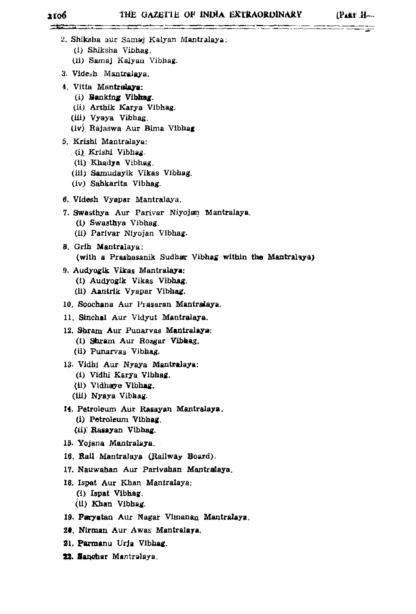
Page 3 of 12
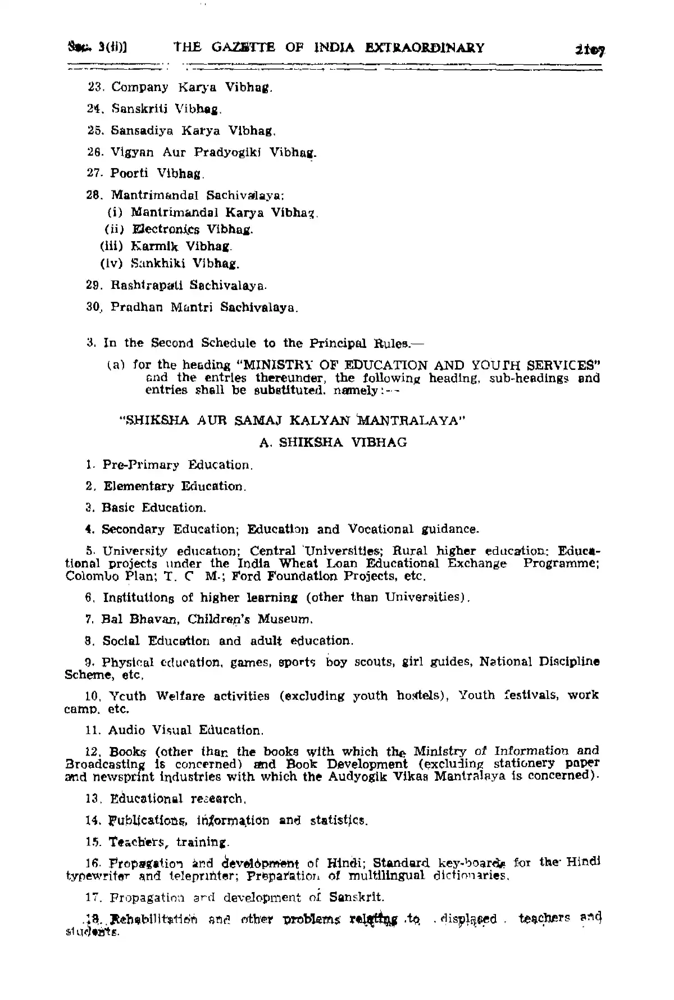
2Schedule 2 › MINISTRY OF EDUCATION AND YOUTH SERVICES
- SHIKSHA AUR SAMAJ KALYAN MANTRALAYA
- A. SHIKSHA VIBHAG
- 1. Pre-Primary Education.
- 2. Elementary Education.
- 3. Basic Education.
- 4. Secondary Education; Education and Vocational guidance.
and 68 more
- 5. University education; Central Universities; Rural higher education: Educational projects under the India Wheat Loan Educational Exchange Programme Colombo Plan; T. C M.; Ford Foundation Projects, etc.
- 6. Institutions of higher learning (other than Universities).
- 7. Bal Bhavan, Children's Museum.
- 8. Social Education and adult education.
- 9. Physical education, games, sports boy scouts, girl guides, National Discipline Scheme, etc. 10, Youth Welfare activities (excluding youth hostels), Youth festivals, work camp, etc.
- 11. Audio Visual Education.
- 12. Books (other than the books with which the Ministry of Information and Broadcasting is concerned) and Book Development (excluding stationery paper and newsprint industries with which the Audyogik Vikas Mantralaya is concerned).
- 13. Educational research
- 14. Publications, information and statistics.
- 15. Teachers, training.
- 16. Propagation and development of Hindi; Standard key-board for the Hindi typewriter and teleprinter; Preparation of multilingual dictionaries.
- 17. Propagation and development of Sanskrit.
- 18. Rehabilitation and other problems relating to displaced teachers and students. [PART IL
- 19. Central Advisory Board of Education.
- 20. UNESCO and Indian National Commission for Cooperation with UNESCO.
- 21. All scholarships including those offered by foreign countries and foreign agencies in subjects dealt with by this Department; and General Scholarships Scheme.
- 22. Education and welfare of Indian students overseas; Education Departments of Indian Missions overseas; Financial assistance to educational institutions and Indian Students' Associations abroad.
- 23. Educational Exchange Programmes; exchange of teachers, professors educationists, scientists, technologists etc.; programme of exchange of scholars between India and foreign countries.
- 24. Recruitment of teachers for foreigr countries.
- 25. Admission of foreign students in Indian Institutions.
- 26. Charities and Charitable Institutions, Charities and Religious Endowments pertaining to subjects dealt with in this Vibhag.
- 27. Advice to the Government of India in all matters of scientific research, other than in nuclear science, atomic energy and higher mathematics.
- 28. Ad hoc scientific research, other than research in higher mathematics nuclear science and atomic energy, in Universities and research institutions.
- 29. International Congress of Orientalists.
- 30. Vigyan Mandirs.
- 31. Anthropological Survey of India. 32, General policy regarding partial financial assistance to scientists going abroad for studies felds other than mathematics, nuclear science and atcmic energy.
- 33. Expansion, Development and Coordination of Technical Education.
- 34. School of Planning and Architecture.
- 35. Regional Schools of Printing.
- 36. Grants-in-aid to State Government Institutions, non-Government institutions professional bodies and technical institutions of Union Territories for technical education. Grants-in-aid for post-graduate studies in basic sciences; grants-in-aid for development of higher scientific education and…
- 37. All India Council for Technical Education.
- 38. Grants to all India research institutions, scientific associations and scientific bodies, except for grants for research and training in higher mathematics. unclear science and atomic energy or grants to Institutions, associations or bodies with which any other Department is concerned.
- 39. Conduct of National Diploma and National Certificate Examinations of the All India Council for Technical Education.
- 40. Practical training facilities for students of engineering and technological Institutions.
- 41. Recognition of professional/technical qualifications for purposes. of recruitment to posts under Government of India.
- 42. National Research Professorships and Fellowships.
- 43. Holding of Foreign Examination in the fields of profesional and terhuliral education in India.
- 44. University Grants Commission.
- 45. National Council for Educational Research and Training.
- C. 3(ii)]
- 46. National Archive: of India.
- 47. National Book Trust.
- 48. Administrative Staff College.
- 49. Indian National Scientific Documentation Centre.
- 50. Indian School of Mines and Applied Geology, Dhanbad.
- 51. Indian Institutes of Technology at Kharagpur, Bombay, Kanpur, Madras and Delhi.
- 52. Indian Institute of Science, Bangalore.
- 53. The Tata Institute of Social Sciences, Bombay
- 54. All other attached or subordinate offices or other organisations concerned with any of the subjects specified in this list.
- B. SAMAJ KALYAN VIBHAG
- 1. Social Welfare.
- 2. Child Welfare and co-ordination of activities of other Ministries and Organi cations in connection with this subject.
- 3. Orphans and Orphanages.
- 4. Beggary, Juvenile Vagrancy, Juvenile delinquency and other 'care programmes.
- 5. United Nations International Children's Emergency Fund (UNICEF).
- 6. Education of the handicapped.
- 7. Central Braille Press, Dehra Dun.
- 8. Social and Moral Hygiene Programmes so far as they relate to women in moral denger, that is to say. Rescue Homes and Reception Centres including aftercare programmes, the administration of the Supression of Immoral Traffic in Women and Girls Act. 1956 and the establishment and maintenance of…
- 9. Scheduled Castes, Scheduled Tribes, ex-criminal Tribes and other Backward Classes.
- 10. (1) Appointment. resignation etc. of Special Officer for Scheduled Castes and Scheduled Tribes etc., and
- il. Reports of the Special Officer.
- 11. (1) Commission to report on the administration of Scheduled Areas and the Welfare of Scheduled Tribes; and
- ii. Issue of directions regarding the drawing up and execution of schemes essential for the welfare of the Scheduled Tribes in any State.
- 12. Reports of the Commission to investigate into conditions of Backward Classes.
- 13. Social security measures
- 14. Central Social Welfare Board.
- 15. All matters relating to Prohibition.
- 16. All Attached or Subordinate Offices or other Organisations concerned with any of the subjects specified in this list.
applied at schedule 2 › ministry Ministry of Education and Youth Services in the Rules after #88
read page break
Page 4 of 12
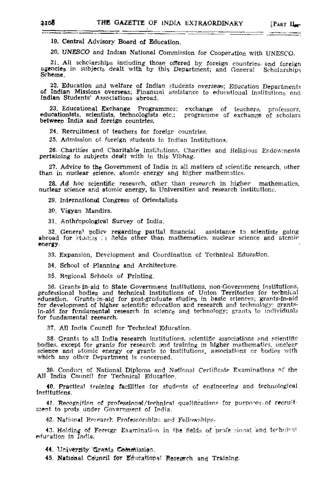
Page 5 of 12
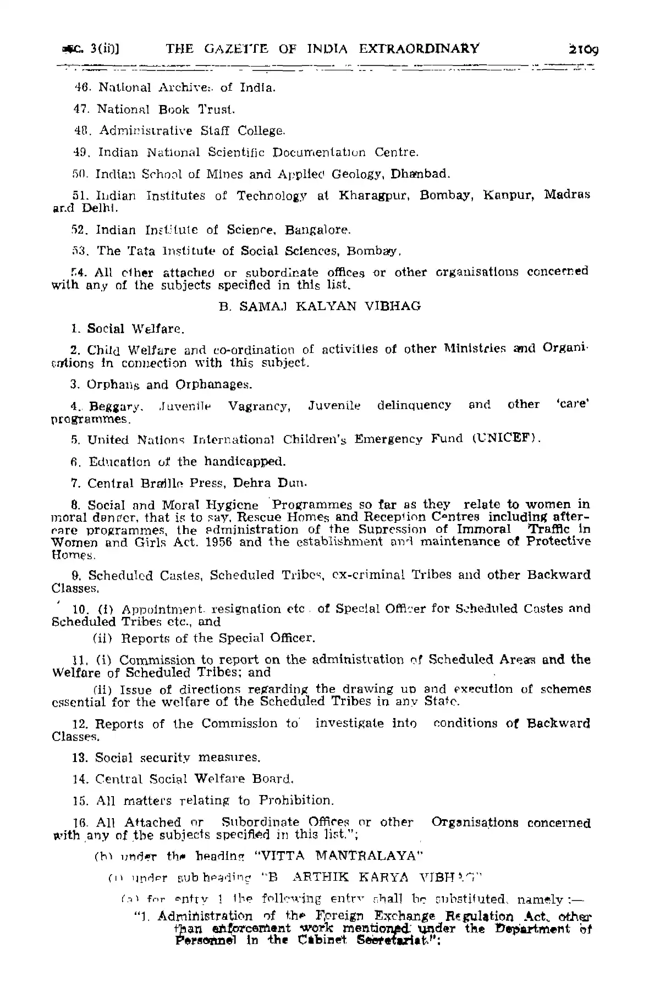
3Schedule 2 › VITTA MANTRALAYA › ARTHIK KARYA VIBH 10 › entry 1
- 1. Administration of the Foreign Exchange Regulation Act, other than enforcement work mentioned under the Department of Personnel in the Cabinet Secretariat.
applied at schedule 2 › ministry MINISTRY OF FINANCE › department B › group_heading I › entry 1 in the Rules after #88
states inferred hindi cited
Page 6 of 12
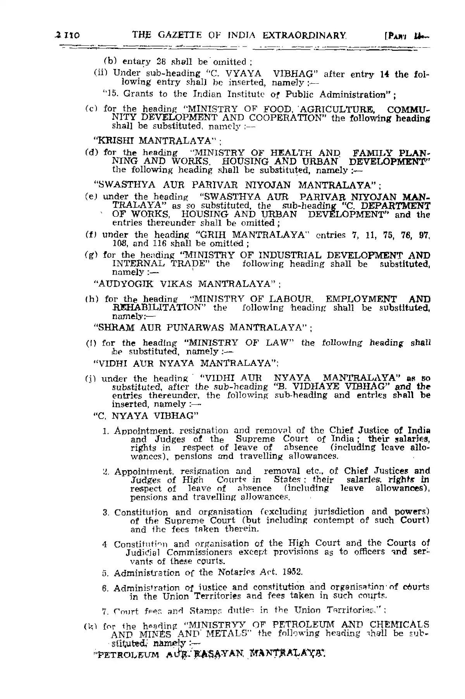
4567891011121314Schedule 2 › VITTA MANTRALAYA › ARTHIK KARYA VIBH 10 › entry 28
applied at schedule 2 › ministry MINISTRY OF FINANCE › department B › group_heading V › entry 28 in the Rules after #88
states inferred hindi cited
after Schedule 2 › VITTA MANTRALAYA › VYAYA VIBHAG › entry 14
- 15. Grants to the Indian Institute of Public Administration
applied at schedule 2 › ministry MINISTRY OF FINANCE › department C › entry 15 in the Rules after #88
states inferred hindi cited
Schedule 2 › MINISTRY OF FOOD, 'AGRICULTURE, COMMUNITY DEVELOPMENT AND COOPERATION
- KRISHI MANTRALAYA
applied at schedule 2 › ministry KRISHI MANTRALAYA in the Rules after #88
Schedule 2 › MINISTRY OF HEALTH AND FAMILY PLANNING AND WORKS. HOUSING AND URBAN DEVELOPMENT
- SWASTHYA AUR PARIVAR NIYOJAN MANTRALAYA
applied at schedule 2 › ministry SWASTHYA AUR PARIVAR NIYOJAN MANTRALAYA in the Rules after #88
Schedule 2 › SWASTHYA AUR PARIVAR NIYOJAN MANTRALAYA › DEPARTMENT ' OF WORKS, HOUSING AND URBAN DEVELOPMENT
applied at schedule 2 › ministry SWASTHYA AUR PARIVAR NIYOJAN MANTRALAYA › department C in the Rules after #88
Schedule 2 › GRIH MANTRALAYA › entry 7; Schedule 2 › GRIH MANTRALAYA › entry 11; Schedule 2 › GRIH MANTRALAYA › entry 75; Schedule 2 › GRIH MANTRALAYA › entry 76; Schedule 2 › GRIH MANTRALAYA › entry 97; Schedule 2 › GRIH MANTRALAYA › entry 108; Schedule 2 › GRIH MANTRALAYA › entry 116
applied at schedule 2 › ministry MINISTRY OF HOME AFFAIRS › part I › group_heading The following subjects which are relatable to… in the Rules after #88
states inferred hindi cited
Schedule 2 › MINISTRY OF INDUSTRIAL DEVELOPMENT AND INTERNAL TRADE
- AUDYOGIK VIKAS MANTRALAYA
applied at schedule 2 › ministry AUDYOGIK VIKAS MANTRALAYA in the Rules after #88
Schedule 2 › MINISTRY OF LABOUR, EMPLOYMENT AND REHABILITATION
- SHRAM AUR PUNARWAS MANTRALAYA
applied at schedule 2 › ministry SHRAM AUR PUNARWAS MANTRALAYA in the Rules after #88
Schedule 2 › MINISTRY OF LAW
- VIDHI AUR NYAYA MANTRALAYA
applied at schedule 2 › ministry VIDHI AUR NYAYA MANTRALAYA in the Rules after #88
after Schedule 2 › VIDHI AUR NYAYA MANTRALAYA › VIDHAYE VIBHAG
- C. NYAYA VIBHAG
- 1. Appointment. resignation and removal of the Chief Justice of India and Judges of the Supreme Court of India; their salaries rights in respect of leave of absence (including leave allowances), pensions and travelling allowances.
- 2. Appointment. resignation and removal etc., of Chief Justices and Judges of High Courts in States their salarles. rights in respect of leave of absence (including leave allowances) pensions and travelling allowances.
- 3. Constitution and organisation (excluding jurisdiction and powers) of the Supreme Court (but including contempt of such Court) and the fees taken therein.
- 4. Constitution and organisation of the High Court and the Courts of Judicial Commissioners except provisions as to officers and servants of these courts.
- 5. Administration of the Notaries Act. 1952.
and 2 more
- 6. Administration of justice and constitution and organisation of courts in the Union Territories and fees taken in such courts.
- 7. Court fres and Stamps duties in the Union Territories
applied at schedule 2 › ministry VIDHI AUR NYAYA MANTRALAYA › department C in the Rules after #88
states inferred hindi cited
Schedule 2 › MINISTRYY OF PETROLEUM AND CHEMICALS AND MINES AND METALS
- PETROLEUM AUR RASAYAN MANTRALAYA
applied at schedule 2 › ministry PETROLEUM AUR RASAYAN MANTRALAYA in the Rules after #88
states inferred loose
Page 7 of 12
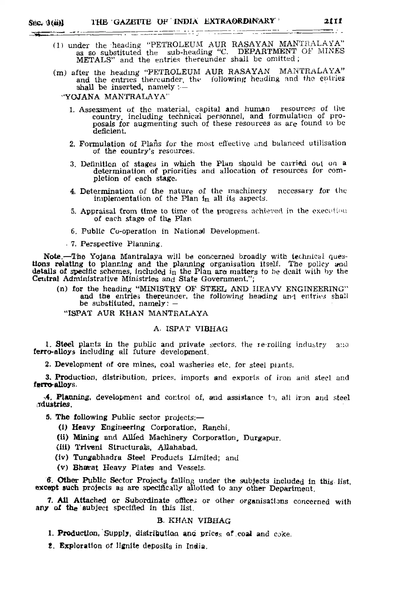
151617Schedule 2 › PETROLEUM AUR RASAYAN MANTRALAYA › DEPARTMENT OF MINES METALS
applied at schedule 2 › ministry PETROLEUM AUR RASAYAN MANTRALAYA › department C in the Rules after #88
states inferred loose
after Schedule 2 › PETROLEUM AUR RASAYAN MANTRALAYA
- YOJANA MANTRALAYA
- 1. Assessment of the material, capital and human resources of the country, including technical personnel, and formulation of proposals for augmenting such of these resources as are found to be deficient.
- 2. Formulation of Plans for the most effective and balanced utilisation of the country's resources.
- 3. Definition of stages in which the Plan should be carried out on a determination of priorities and allocation of resources for completion of each stage.
- 4. Determination of the nature of the machinery necessary for the inplementation of the Plan in all its aspects.
- 5. Appraisal from time to time of the progress achieved in the execution of each stage of the Plan
and 3 more
- 6. Public Co-operation in National Development.
- 7. Perspective Planning.
- Note. The Yojana Mantralaya will be concerned broadly with technical questions relating to planning and the planning organisation itself. The policy and details of specific schemes, included in the Plan are matters to be dealt with by the Central Administrative Ministries and State Government.
applied at schedule 2 › ministry YOJANA MANTRALAYA in the Rules after #88
Schedule 2 › MINISTRY OF STEEL AND HEAVY ENGINEERING
- ISPAT AUR KHAN MANTRALAYA
- A. ISPAT VIBHAG
- 1. Steel planta in the public and private sectors, the re-rolling industry 3: ferro-alloys including all future development.
- 2. Development of ore mines, coal washeries etc. for steel plants.
- 3. Production, distribution, prices, imports and exports of iron and steel and ferro-alloys.
- 4. Planning, development and control of, and assistance to, all iron and steel ndustries.
and 20 more
- 5. The following Public sector projects:- (1) Heavy Engineering Corporation, Ranchi
- ii. Mining and Allied Machinery Corporation, Durgapur.
- iii. Triveni Structurals, Allahabad.
- iv. Tungabhadra Steel Products Limited; and
- v. Bharat Heavy Plates and Vessels.
- 6. Other Public Sector Projects falling under the subjects_included in this list except such projects as are specifically allotied to any other Department.
- 7. All Attached or Subordinate offices or other organisations concerned with any of the subject specifled in this list.
- B. KHAN VIBHAG
- 1. Production, Supply, distribution and prices of coal and cake.
- 2. Exploration of lignite deposits in India
- 3. Setting up of synthetic oil plant based on coal and low temperature carbonization plants for the production of smokeless domestic coal
- 4. Administration of the Coal Mines (Conservation and Safety) Act, 1952.
- 5. Administration of the Coal Bearing Areas (Acquisition and Development) Act, 1957.
- 6. Regulation of mines and minerals development under the Mines and Minerals (Regulation and Development) Act, 1957 and other Unlon laws including questions concerning various States and incidental business in respect of these
- 7. All Metals (other than those decit with in the Department of Steel) such as Aluminium, Zinc, Copper and all minerals not covered by entries 1 to 6 above.
- 8. Planaing, development and control of, and assistance to, all industries dealt with by the Department.
- 9. Geological Survey of India.
- 10. Indian ‘Bureau of Mines.
- 11. All other Attached or Subordinate Offices or other organisationg concerned with any of the subjects specified in this list.
- 12. Public sector protects falling under the subjects included in this list except such projects as are specifically allotted to any other Department or Ministry.
applied at schedule 2 › ministry MINISTRY OF STEEL & HEAVY ENGINEERING in the Rules after #88
read page break
Page 8 of 12
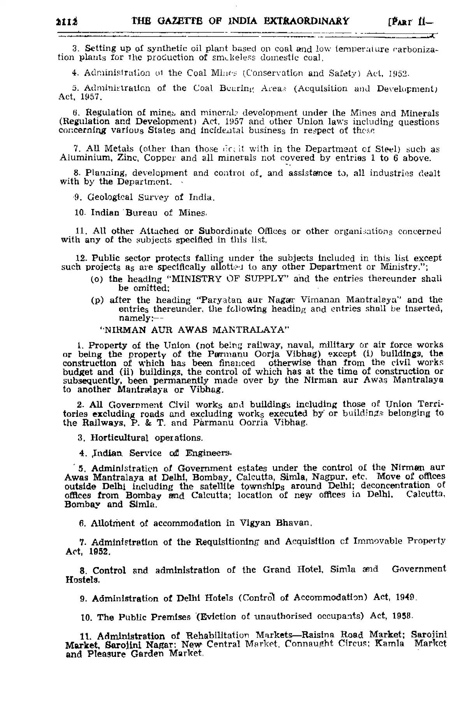
1819Schedule 2 › MINISTRY OF SUPPLY
applied at schedule 2 › ministry in the Rules after #88
after Schedule 2 › Paryatan aur Nagar Vimanan Mantralaya
- NIRMAN AUR AWAS MANTRALAYA
- 1. Property of the Union (not being railway, naval, military or air force works or being the property of the Parmanu Oorja Vibhag) except (1) buildings, the construction of which has been financed otherwise than from the civil works budget and (ii) buildings, the control of which has at the time of…
- 2. All Government Civil works and buildings including those of Union Territories excluding roads and excluding works executed by or buildings belonging to the Railways, P. & T. and Parmanu Oorria Vibhag.
- 3. Horticultural operations.
- 4. Indian Service of Engineers.
- 5. Administration of Government estates under the control of the Nirman aur Awas Mantralaya at Delhi, Bombay, Calcutta, Simla, Nagpur, etc. Move of offices outside Delhi including the satellite townships around Delhi; deconcentration of offices from Bombay and Calcutta; location of new offices in…
and 21 more
- 6. Allotment of accommodation in Vigyan Bhavan
- 7. Administration of the Requisitioning and Acquisition of Immovable Property Act, 1952.
- 8. Control and administration of the Grand Hotel, Simla and Government Hostels.
- 9. Administration of Delhi Hotels (Control of Accommodation) Act, 1949.
- 10. The Public Premises (Eviction of unauthorised occupants) Act, 1958.
- 11. Administration of Rehabilitation Markets-Raisina Road Market; Sarojini Market, Sarojini Nagar; New Central Market, Connaught Circus; Kamla Market and Pleasure Garden Market.
- 12. Formulation of housing policy and programme. Review of the implementalion of the Plan Schemes. Collection and dissemination of data on housing, biulding materials and building techniques. General measures for reduction of building costs. International cooperation and technical assistance in housing.
- 13. Stallonery and printing for the Government of India including oЛcial publications.
- 14. Urban Development including Slum Clearance Schemes and the Jhuggi and Jhonpri Removal Scheme.
- 15. Town and Country Planning; matters relating to Calcutta Metropolitan Flanning Organisation.
- 16. Scheme of large scale acquisition, development and disposal of land in Delhi.
- 17. Delhi Development Authority.
- 18. Improvement Trusts.
- 19. Master Plan of Delhi. Co-ordination of work in respect of the Master Plan and slum clearance in the Union Territory of Delhi.
- 20. Erection of memorials in honour of freedom fighters.
- 21. Administration of the Delhi Development Act, 1957.
- 22. The Delhi Rent Control Act 1958; and evictions in Delhi.
- 23. Development of Government Colonies in Delhi.
- 24. Allotment of Government lands in Delhi.
- 25. All Attached or Subordinate Offices or other organisations concerned with any of the subjects specified in this list.
- 26. Public sector projects falling under the subjects included in this list except such projects as are specifically allotted to any other Department
applied at schedule 2 › ministry NIRMAN AUR AWAS MANTRALAYA in the Rules after #88
read page break, states inferred hindi cited
Page 9 of 12
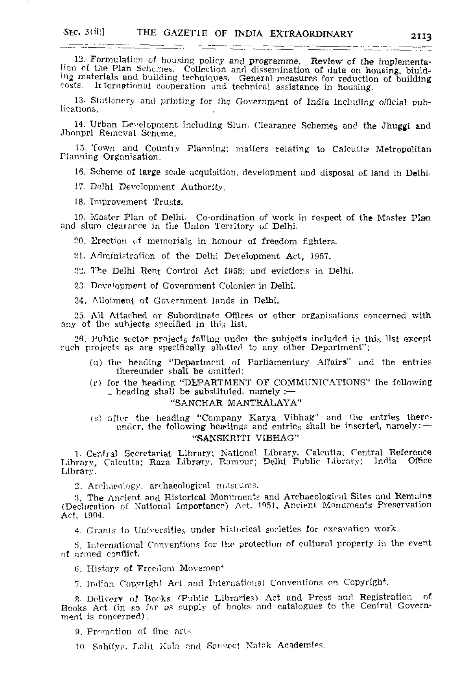
202122Schedule 2 › Department of Parliamentary Affairs
applied at schedule 2 › ministry in the Rules after #88
Schedule 2 › DEPARTMENT OF COMMUNICATIONS
- SANCHAR MANTRALAYA
applied at schedule 2 › department SANCHAR MANTRALAYA in the Rules after #88
after Schedule 2 › Company Karya Vibhag
- SANSKRITI VIBHAG
- 1. Central Secretariat Library; National Library. Calcutta; Central Reference Library, Calcutta; Raza Library, Rampur; Delhi Public Library; India Office Library.
- 2. Archaeology, archaeological muscums.
- 3. The Ancient and Historical Monuments and Archaeological Sites and Remains (Declaration of National Importance) Act, 1951, Ancient Monuments Preservation Act, 1904.
- 4. Grants to Universities under historical societies for excavation work.
- 5. Infernational Conventions for the protection of cultural property in the event of armed conflict.
and 71 more
- 6. History of Freedom Movement
- 7. Indian Copyright Act and International Conventions on Copyright.
- 8. Delivery of Books (Public Libraries) Act and Press and Registration of Books Act (in so far as supply of books and catalogues to the Central Government is concerned).
- 9. Promotion of fine arts
- 10. Sahitya, Lalit Kula and Sangeet Natak Academies.
- 11. General Development of Museums, National Museum, New Delhi, Indian Museum, Calcutta; and Salar Jung Museum and Library, Hyderabad.
- 12. National Gallery of Modern Art, New Delhi.
- 13. Victorla Memorial Hall, Calcutta.
- 14. Indian War Memorial, Delhi.
- 15. Acquisition of Indian and foreign art objects.
- 16. Treasure Trove; export of antiquities.
- 17. Open air Theatres in rural areas and Theatres in State Capitals.
- 18. Financial assistance to authors and artists or their survivors in indigent circumstances, other than those belonging to the categories covered under the Scheme of the Ministry of Information and Broadcasting.
- 19. Charities and Charitable Institutions, Charities and Religious Endowments pertaining to subjects dealt with in this Department.
- 20. Scholarships, Including those offered by foreign Governments and foreign agencies in respect of subjects dealt with by this Department.
- 21. Development of Modern Indian Languages.
- 22. Publication of Rare Manuscripts.
- 23. Grants to all-India Cultural institutions.
- 24. Grants to Indo-foreign Cultural Societies.
- 25. Cultural agreements and friendship treatles with foreign countries.
- 26. International Students' Houses in India and abroad.
- 27. Distribution of gifts books received from abroad.
- 28. Appointment of Cultural Attaches abroad.
- 29. Visit of Cultural Delegations etc. to India, sponsored and unsponsored.
- 30. Individuals (including cultural lecturers) --sponsored by Government for visits abroad.
- 31. Presentation of books to foreign countries.
- 32. Establishment of libraries abroad.
- 33. Translation of Indian classics into foreign languages.
- 34. Exchange of official publications with foreign Governments and institutions and agreements for such exchanges.
- 35. Presentation of Indian art obiects abroad.
- 36. Institute of Indology.
- 37. Admission of Foreign students in Cultural Institutions.
- 38. Exchange of artists, dancers, musicians, etc. under the Cultural Exchange Programmes.
- 39. Revision of Gazetteers
- 40. All other attached or subordinate offices or other organisations concerned with any of the subjects specifled in this list.
- SANSADIYA KARYA VIBHAG
- 1. Dates of summoning and prorogation of the two Houses of Parliament; dissolution of Lok Sabha, President's address to Parliament.
- 2. Planning and co-ordination of legislative and other official business in both Houses.
- 3. Allocation of Government une in Parliament for discussion of motions given notice of by Members.
- 4. Llaison with Lealers of Groups and Deputy Chief Whips.
- 5. Lists of Members for Select and Joint Committees on Bills.
- 6. Appointment of Members of Parliament on Committees and other bodies sel up by Government
- 7. Functioning of Consultative Committees of Members of Parliament for various Ministries.
- 8. Implementation of assurances given by Ministries in Parliament.
- 9. Government's stand on Private Members' Bills and Resolutions.
- 10. Secretarial assistance to the Cabinet Committee on Parliamentary Affairs.
- 11. Salaries and Allowances of Members of Parliament Act.
- 12. Salaries and Allowances of the Officers of Parliament Act.
- 13. Advice to Ministries on procedural and other Parliamentary matters.
- 14. Coordination of action by Ministries on the recommendations of general application made by Parliamentary Committees.
- 15. Officially sponsored visits of Members of Parliament to places of interest.
- 16. Matters connected with powers, privileges and immunities of Members of Parlament.
- Vigyan Aur Prodyogiki Vibhag
- 1. All matters relating to the Council of Scientific and Industrial Research.
- 2. International Scientifle unions, excluding those which may be related to the subjects allotted to other Departments.
- 3. Scientific liaison through the Indian Scientifle Liaison Officer.
- 4. Survey of India and compilation of National Atlas.
- 5. Zoological Survey of India and Botanical Survey of India.
- 6. Annual Session of Indian Science Congress.
- 7. Pan-Indian Ocean Science Association.
- 8. Central Board of Geophysics.
- 9. Oceanography and the scientific aspects of the sea-bed, ecology, environment and Futurology.
- POORTI VIBHAG
- 1. Purchase, inspection and shipment of stores for the Central Government other than the items the purchase, inspection and shipment of which are delegated to other authorities by a general or special order.
- 2. Disposal of surpius stores.
- 3. Residual work of supply and disposal relating to the late war organisations including the Directorate General, Aircraft, including Civil Maintenance Units and Directorate General, Ship Repairs.
- 4. Administration of.
- a. Directorate General of Supply and Disposals
- b. National Test House. Alipore. Calcutta
- c. India Supply Mission, the United Kingdom
- d. India Supply Mission, the U.S.A.
applied at schedule 2 › department SANSKRITI VIBHAG in the Rules after #88
read page break, states inferred hindi cited
Page 10 of 12
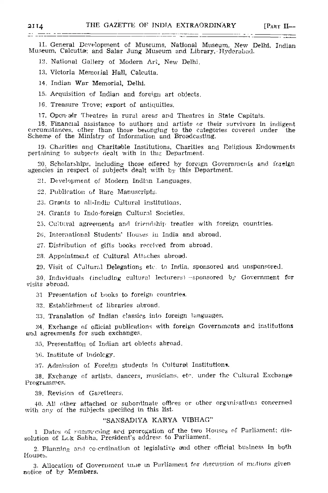
Page 11 of 12
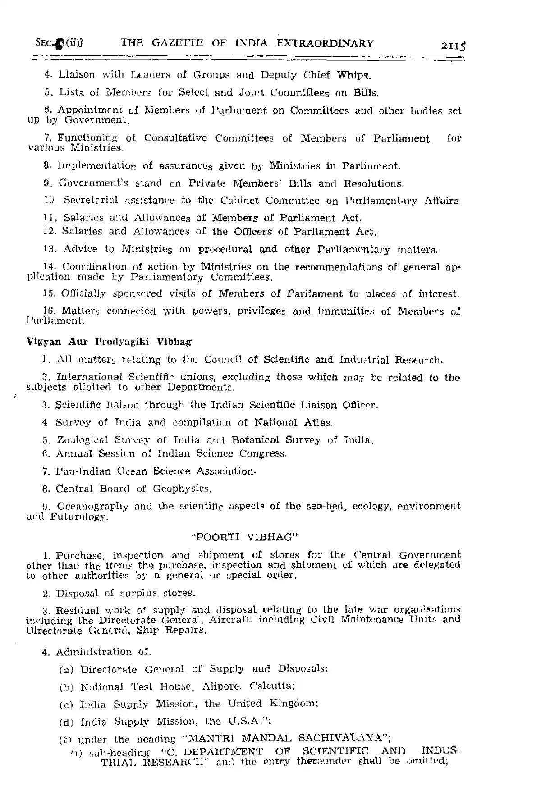
23Schedule 2 › MANTRI MANDAL SACHIVALAYA › DEPARTMENT OF SCIENTIFIC AND INDUSTRIAL RESEARCH
applied at schedule 2 › ministry CABINET SECRETARIAT › department C in the Rules after #88
states inferred hindi cited, states inferred loose
Page 12 of 12
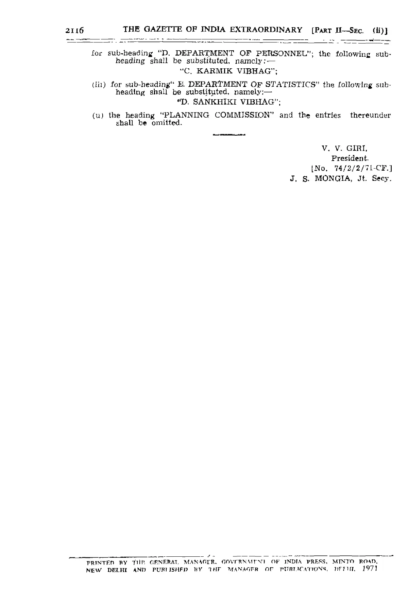
242526Schedule 2 › MANTRI MANDAL SACHIVALAYA › DEPARTMENT OF PERSONNEL
- C. KARMIK VIBHAG
applied at schedule 2 › ministry CABINET SECRETARIAT › department C in the Rules after #88
states inferred hindi cited
Schedule 2 › MANTRI MANDAL SACHIVALAYA › DEPARTMENT OF STATISTICS
- D. SANKHIKI VIBHAG
applied at schedule 2 › ministry CABINET SECRETARIAT › department D in the Rules after #88
states inferred hindi cited
Schedule 2 › PLANNING COMMISSION
applied at schedule 2 › ministry in the Rules after #88
How this document was read
Edits to the reading
| Date | By | Edit | Before → after |
|---|---|---|---|
| 14 November 2026 | mukundesh | word corrected | |
| 21 November 2026 | claude | word corrected |
Changes placed by an inference rule
| Change | Rule | Status | What |
|---|---|---|---|
| 3 | hindi_cited | accepted | change 3: ministry VITTA MANTRALAYA taken for ministry MINISTRY OF FINANCE, cited by its Hindi name |
| 3 | hindi_cited | accepted | change 3: department ARTHIK KARYA VIBH 10 taken for department Department of Economic Affairs, cited by its Hindi name |
| 4 | hindi_cited | accepted | change 4: ministry VITTA MANTRALAYA taken for ministry MINISTRY OF FINANCE, cited by its Hindi name |
| 4 | hindi_cited | accepted | change 4: department ARTHIK KARYA VIBH 10 taken for department Department of Economic Affairs, cited by its Hindi name |
| 5 | hindi_cited | accepted | change 5: ministry VITTA MANTRALAYA taken for ministry MINISTRY OF FINANCE, cited by its Hindi name |
| 5 | hindi_cited | accepted | change 5: department VYAYA VIBHAG taken for department Department of Expenditure, cited by its Hindi name |
| 9 | hindi_cited | accepted | change 9: ministry GRIH MANTRALAYA taken for ministry MINISTRY OF HOME AFFAIRS, cited by its Hindi name |
| 9 | hindi_cited | accepted | change 9: ministry GRIH MANTRALAYA taken for ministry MINISTRY OF HOME AFFAIRS, cited by its Hindi name |
| 9 | hindi_cited | accepted | change 9: ministry GRIH MANTRALAYA taken for ministry MINISTRY OF HOME AFFAIRS, cited by its Hindi name |
| 9 | hindi_cited | accepted | change 9: ministry GRIH MANTRALAYA taken for ministry MINISTRY OF HOME AFFAIRS, cited by its Hindi name |
| 9 | hindi_cited | accepted | change 9: ministry GRIH MANTRALAYA taken for ministry MINISTRY OF HOME AFFAIRS, cited by its Hindi name |
| 9 | hindi_cited | accepted | change 9: ministry GRIH MANTRALAYA taken for ministry MINISTRY OF HOME AFFAIRS, cited by its Hindi name |
| 9 | hindi_cited | accepted | change 9: ministry GRIH MANTRALAYA taken for ministry MINISTRY OF HOME AFFAIRS, cited by its Hindi name |
| 13 | hindi_cited | accepted | change 13: department VIDHAYE VIBHAG taken for department LEGISLATIVE DEPARTMENT., cited by its Hindi name |
| 14 | loose | accepted | change 14: ministry MINISTRYY OF PETROLEUM AND CHEMICALS AND MINES AND METALS taken for ministry MINISTRY OF PETROLEUM AND CHEMICALS AND MINES & METALS, named loosely |
| 15 | loose | accepted | change 15: department DEPARTMENT OF MINES METALS taken for department DEPARTMENT OF MINES AND METALS, named loosely |
| 19 | hindi_cited | accepted | change 19: ministry Paryatan aur Nagar Vimanan Mantralaya taken for ministry MINISTRY OF TOURISM & CIVIL AVIATION, cited by its Hindi name |
| 22 | hindi_cited | accepted | change 22: ministry Company Karya Vibhag taken for department DEPARTMENT OF COMPANY AFFAIRS, cited by its Hindi name |
| 23 | hindi_cited | accepted | change 23: ministry MANTRI MANDAL SACHIVALAYA taken for ministry CABINET SECRETARIAT, cited by its Hindi name |
| 23 | loose | accepted | change 23: department DEPARTMENT OF SCIENTIFIC AND INDUSTRIAL RESEARCH taken for department Department of Scientific and Industrial Research. All matters relating to the Council of Scientific and… |
| 24 | hindi_cited | accepted | change 24: ministry MANTRI MANDAL SACHIVALAYA taken for ministry CABINET SECRETARIAT, cited by its Hindi name |
| 25 | hindi_cited | accepted | change 25: ministry MANTRI MANDAL SACHIVALAYA taken for ministry CABINET SECRETARIAT, cited by its Hindi name |
| hindi_name | accepted | the Second Schedule's SHIKSHA AUR SAMAJ KALYAN MANTRALAYA read as MINISTRY OF EDUCATION AND SOCIAL WELFARE, the First Schedule's English name for it | |
| hindi_name | accepted | the Second Schedule's SHIKSHA VIBHAG read as DEPARTMENT OF EDUCATION, the First Schedule's English name for it | |
| hindi_name | accepted | the Second Schedule's KRISHI MANTRALAYA read as MINISTRY OF AGRICULTURE, the First Schedule's English name for it | |
| hindi_name | accepted | the Second Schedule's SWASTHYA AUR PARIVAR NIYOJAN MANTRALAYA read as MINISTRY OF HEALTH AND FAMILY PLANNING, the First Schedule's English name for it | |
| hindi_name | accepted | the Second Schedule's AUDYOGIK VIKAS MANTRALAYA read as MINISTRY OF INDUSTRIAL DEVELOPMENT, the First Schedule's English name for it | |
| hindi_name | accepted | the Second Schedule's SHRAM AUR PUNARWAS MANTRALAYA read as MINISTRY OF LABOUR AND REHABILITATION, the First Schedule's English name for it | |
| hindi_name | accepted | the Second Schedule's VIDHI AUR NYAYA MANTRALAYA read as MINISTRY OF LAW AND JUSTICE, the First Schedule's English name for it | |
| hindi_name | accepted | the Second Schedule's NYAYA VIBHAG read as DEPARTMENT OF JUSTICE, the First Schedule's English name for it | |
| hindi_name | accepted | the Second Schedule's PETROLEUM AUR RASAYAN MANTRALAYA read as MINISTRY OF PETROLEUM AND CHEMICALS, the First Schedule's English name for it | |
| hindi_name | accepted | the Second Schedule's YOJANA MANTRALAYA read as MINISTRY OF PLANNING, the First Schedule's English name for it | |
| hindi_name | accepted | the Second Schedule's ISPAT AUR KHAN MANTRALAYA read as MINISTRY OF STEEL AND MINES, the First Schedule's English name for it | |
| hindi_name | accepted | the Second Schedule's ISPAT VIBHAG read as DEPARTMENT OF STEEL, the First Schedule's English name for it | |
| hindi_name | accepted | the Second Schedule's KHAN VIBHAG read as DEPARTMENT OF MINES, the First Schedule's English name for it | |
| hindi_name | accepted | the Second Schedule's NIRMAN AUR AWAS MANTRALAYA read as MINISTRY OF WORKS AND HOUSING, the First Schedule's English name for it | |
| hindi_name | accepted | the Second Schedule's SANCHAR MANTRALAYA read as MINISTRY OF COMMUNICATIONS, the First Schedule's English name for it | |
| hindi_name | accepted | the Second Schedule's SANSKRITI VIBHAG read as DEPARTMENT OF CULTURE, the First Schedule's English name for it | |
| hindi_name | accepted | the Second Schedule's SANSADIYA KARYA VIBHAG read as DEPARTMENT OF PARLIAMENTARY AFFAIRS, the First Schedule's English name for it | |
| hindi_name | accepted | the Second Schedule's Vigyan Aur Prodyogiki Vibhag read as DEPARTMENT OF SCIENCE AND TECHNOLOGY, the First Schedule's English name for it | |
| hindi_name | accepted | the Second Schedule's POORTI VIBHAG read as DEPARTMENT OF SUPPLY, the First Schedule's English name for it | |
| hindi_name | accepted | the Second Schedule's SANKHIKI VIBHAG read as DEPARTMENT OF STATISTICS, the First Schedule's English name for it | |
| renamed_by_decision | unreviewed | Banking Vibhag renamed Department of Banking by a person's decision, not by the gazette (English name from 1_Upload_123, decided by mukundesh, 21 Nov 2026) | |
| renamed_by_decision | unreviewed | Rajaswa Aur Bima Vibhag renamed Department of Revenue and Insurance by a person's decision, not by the gazette (English name from 1_Upload_123, decided by mukundesh, 21 Nov 2026) | |
| renamed_by_decision | unreviewed | Sahkarita Vibhag renamed Department of Cooperation by a person's decision, not by the gazette (English name from 1_Upload_123, decided by mukundesh, 21 Nov 2026) | |
| renamed_by_decision | unreviewed | Parivar Niyojan Vibhag renamed Department of Family Planning by a person's decision, not by the gazette (English name from 1_Upload_123, decided by mukundesh, 21 Nov 2026) | |
| renamed_by_decision | unreviewed | Shram Aur Rozgar Vibhag renamed Department of Labour and Employment by a person's decision, not by the gazette (English name from 1_Upload_123, decided by mukundesh, 21 Nov 2026) | |
| renamed_by_decision | unreviewed | Rasayan Vibhag renamed Department of Chemicals by a person's decision, not by the gazette (English name from 1_Upload_123, decided by mukundesh, 21 Nov 2026) |
From the Government of India (Allocation of Business) Rules, 1961 and their amendments, as published by the Cabinet Secretariat (cabsec.gov.in), read by orgpedia. The readings of the older scanned gazettes have known gaps.